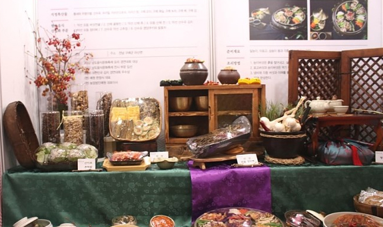

공지사항
- 제26회 남도음식 경연대회 공고 2019.09.13
- 남도음식문화큰잔치 셔틀버스 운행 안내 2019.09.10
- 남도음식문화큰잔치 리플렛 2019.09.08
- 남도음식문화큰잔치 홍보 포스터 2019.09.06
- 남도음식문화큰잔치 자원봉사자 모집 2019.09.01
갤러리
- 
남도음식

상달제

남도음식경연대회

남도음식
상달제
남도음식경연대회
1. 일시 : 2019.10.13(일) 10:00-12:30
2. 장소 : 강진만 생태공원 축제장내
3. 대상 : 전국 고등학생 및 대학생
4. 신청서 접수 : 2019.9.16(월)~9.23(월)
5. 접수 방법 : 이메일 food0337@hanmail.net
6. 문의 : 061-284-0361(한국외식업 전라남도지회)